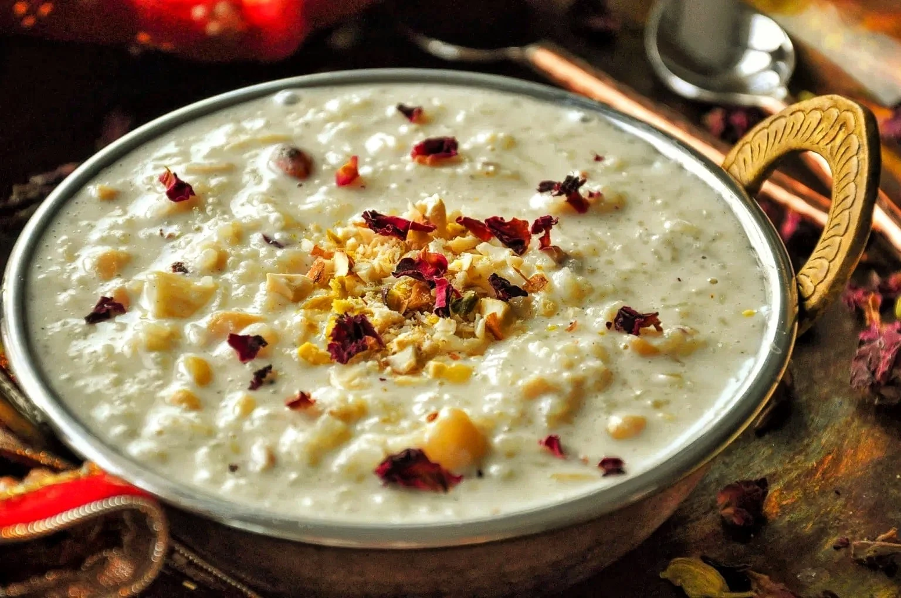

Kheer

Description
Kheer, an iconic Indian rice pudding, is a velvety delight simmered to perfection with rice and milk.
Fragrant with cardamom and adorned with nuts, it embodies the essence of celebratory indulgence.
Whether enjoyed warm or chilled, Kheer's versatility and timeless appeal make it a cherished dessert,
bringing families together over shared moments of sweetness.
Ingredients
- Basmati Rice: 1/4 cup
- Whole Milk: 1 liter
- Sugar: 1/2 to 3/4 cup (adjust to taste)
- Cardamom Pods: 3-4, crushed or powdered
- Saffron Strands: a pinch (optional)
- Chopped Nuts: Almonds, Cashews, Pistachios (1/4 cup, or as desired)
- Raisins: 2 tablespoons (optional)
- Ghee (Clarified Butter): 1 tablespoon
- Water: 1/4 cup (for soaking rice)
- Rose Water or Kewra Water: 1 teaspoon (optional, for fragrance)
- A pinch of salt (enhances sweetness)
Steps
- Rinse and Soak Rice: Rinse 1/4 cup of Basmati rice under cold water. Soak it in water for about 30 minutes.
- Cook Rice in Milk: In a heavy-bottomed pan, bring 1 liter of whole milk to a boil. Drain the soaked rice and add it to the boiling milk. Simmer on low heat, stirring occasionally.
- Add Cardamom and Saffron: Once the rice is almost cooked and the mixture thickens, add crushed or powdered cardamom and a pinch of saffron strands (if using).
- Sweeten with Sugar: Add 1/2 to 3/4 cup of sugar, adjusting to your taste preferences. Stir well to dissolve the sugar.
- Add Chopped Nuts and Raisins: In a separate pan, heat 1 tablespoon of ghee. Fry chopped almonds, cashews, pistachios, and raisins until golden. Add this to the simmering kheer.
- Continue Simmering: Allow the kheer to simmer on low heat until it reaches a creamy consistency, and the rice is fully cooked.
- Finish with Aromatic Essence (Optional): For added fragrance, you can stir in 1 teaspoon of rose water or kewra water.
- Cool and Serve: Once the kheer has thickened to your liking, remove it from heat. Let it cool, and it will continue to thicken as it cools. Serve chilled or at room temperature, garnished with additional nuts if desired.